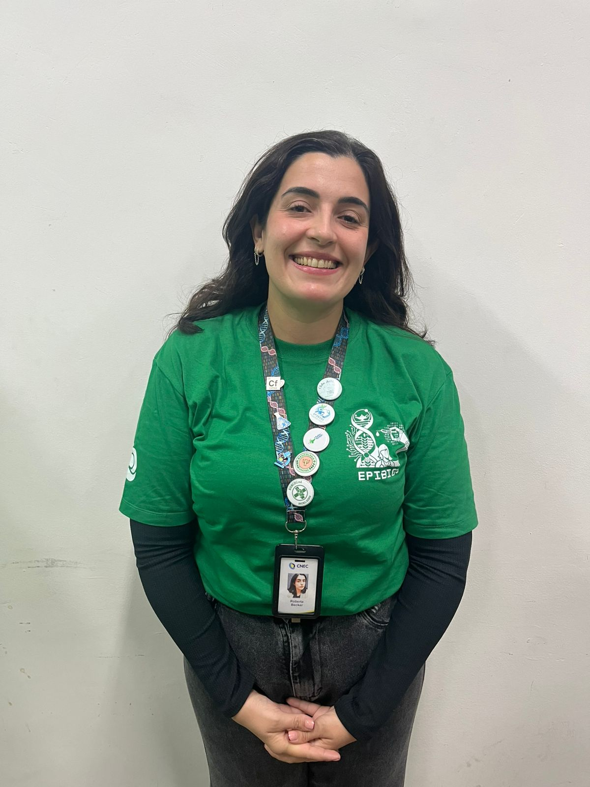
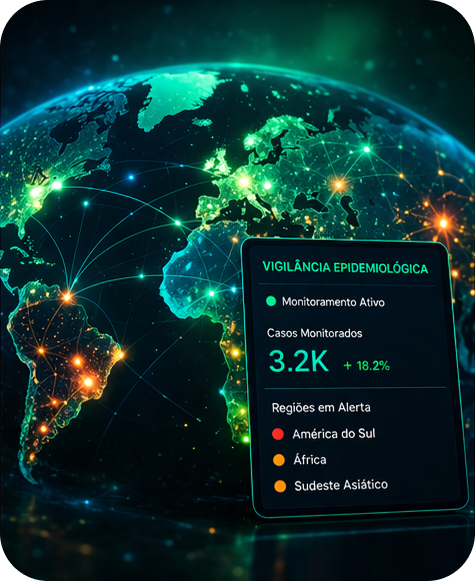

Sobre a EPIBIOS
A EPIBIOS é um grupo de pesquisa biomédica em epidemiologia e saúde, dedicado ao desenvolvimento de soluções inovadoras para desafios de saúde pública, com ênfase na integração de inteligência artificial e modelos de linguagem em projetos epidemiológicos.
Missão
Produzir conhecimento científico e tecnológico que auxilie na tomada de decisão em saúde pública.
Diferencial
Integração pioneira entre epidemiologia, dados em saúde e Large Language Models.
Impacto
Desenvolvendo ferramentas que geram impacto real na saúde da população e no SUS.
Oque fazemos
Análises Genéticas Populacionais
Mapeamos padrões genéticos em populações para antecipar riscos e transformar dados biológicos em estratégias de prevenção.
Inteligência Artificial Aplicada
Aplicamos algoritmos de machine learning para analisar grandes volumes de dados epidemiológicos, prever surtos e apoiar a tomada de decisão em saúde pública com maior precisão e agilidade.

Vigilância Epidemiológica
Monitoramos dados de saúde em tempo real para identificar mudanças no comportamento de doenças, detectar surtos precocemente e gerar insights estratégicos para intervenções eficazes.
Análise de Doenças Infecciosas
Analisamos dados provenientes da vigilância epidemiológica para identificar padrões de ocorrência, fatores de risco e tendências populacionais, contribuindo para estudos estratégicos em saúde pública.
Nossos Projetos
Análise Epidemiológica das Hepatites B e C no Município de Osório/RS (2003-2023)
Análise dos casos de hepatites B e C no município de Osório, destacando alta incidência e desafios na prevenção.
Myopredict — CardiHack Challenge
Modelagem de risco de eventos cardíacos adversos e gravidade em cardiomiopatia hipertrófica com scores poligênicos e aprendizado de máquina.
Em andamento
SaúdeLitoral — IA para regulação no litoral norte do RS
Ecossistema digital com IA generativa e inteligência coletiva para orientar fluxos assistenciais e mitigar o colapso sazonal do SUS no verão.
Equipe
Nosso impacto
10+
Projetos desenvolvidos
25+
Alunos formados
15
Publicações
5
Instituições parceiras